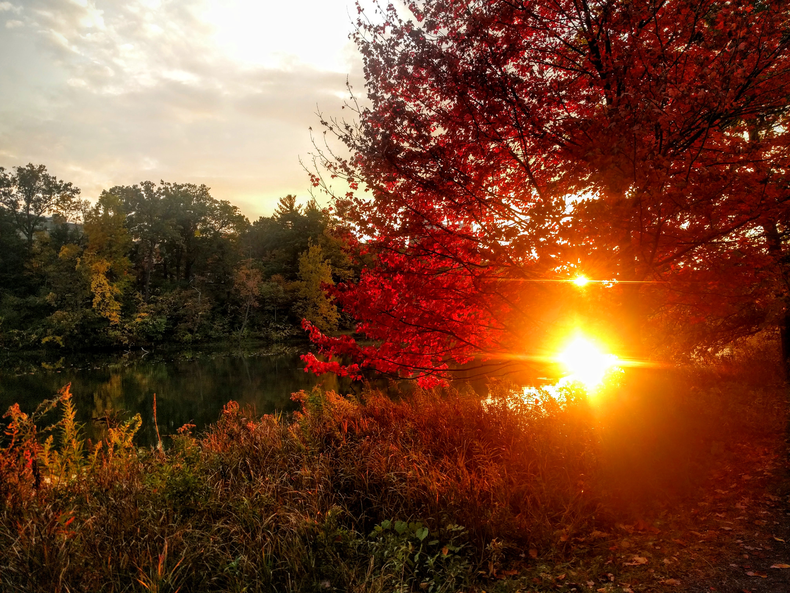

<div class="content">


<div class="textbox-front" style="float:left; white-space: normal;">
  <h2 class="section-head">present</h2>
  <div class="section-text">
    <p>Second year PhD student, <a href="http://infosci.cornell.edu/" target="_blank">Information Science</a>, <a href="http://www.cornell.edu/" target="_blank">Cornell University</a>
    <br>
    Advised by <a href="http://www.cs.cornell.edu/~cristian/" target="_blank">Cristian Danescu-Niculescu-Mizil</a>
    <br><br></p>
  </div>
  <h2 class="section-head">future</h2>
  <div class="section-text">
    <p>Intern, <a href="https://research.fb.com/category/data-science/" target="_blank">Facebook Core Data Science</a> (Summer 2017)
    <br><br></p>
  </div>
  <h2 class="section-head">past</h2>
  <div class="section-text">
    <p>BS Computer Science, <a href="http://stanford.edu/" target="_blank">Stanford University</a> (2011-2015)
    <br><br></p>
  </div>
  <h2 class="section-head">principal components</h2>
  <div class="section-text">
    <p>natural language processing, computational social science, machine learning</p>
  </div>

</div>
  <!-- <h1 class="page-heading">Posts</h1>

  <ul class="post-list">
    {% for post in site.posts %}
      <li>
        <span class="post-meta">{{ post.date | date: "%b %-d, %Y" }}</span>

        <h2>
          <a class="post-link" href="{{ post.url | prepend: site.baseurl }}">{{ post.title }}</a>
        </h2>
      </li>
    {% endfor %}
  </ul> 

  <p class="rss-subscribe">subscribe <a href="{{ "/feed.xml" | prepend: site.baseurl }}">via RSS</a></p> -->

</div>
